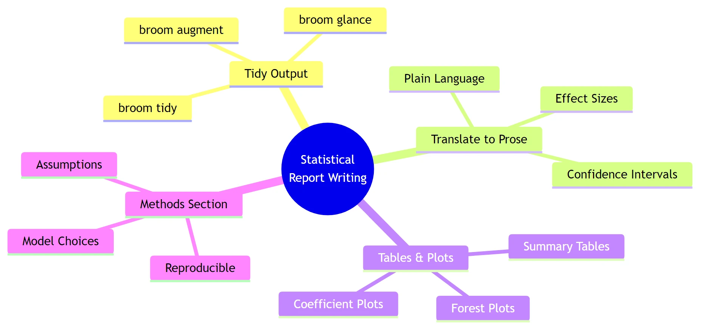
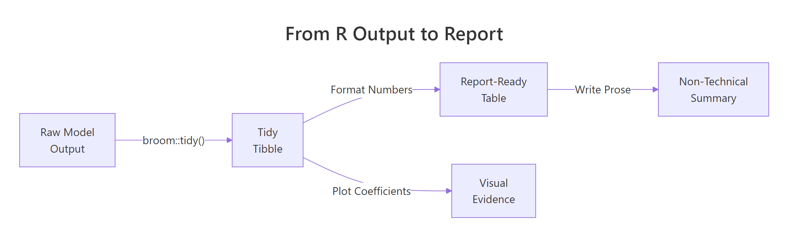
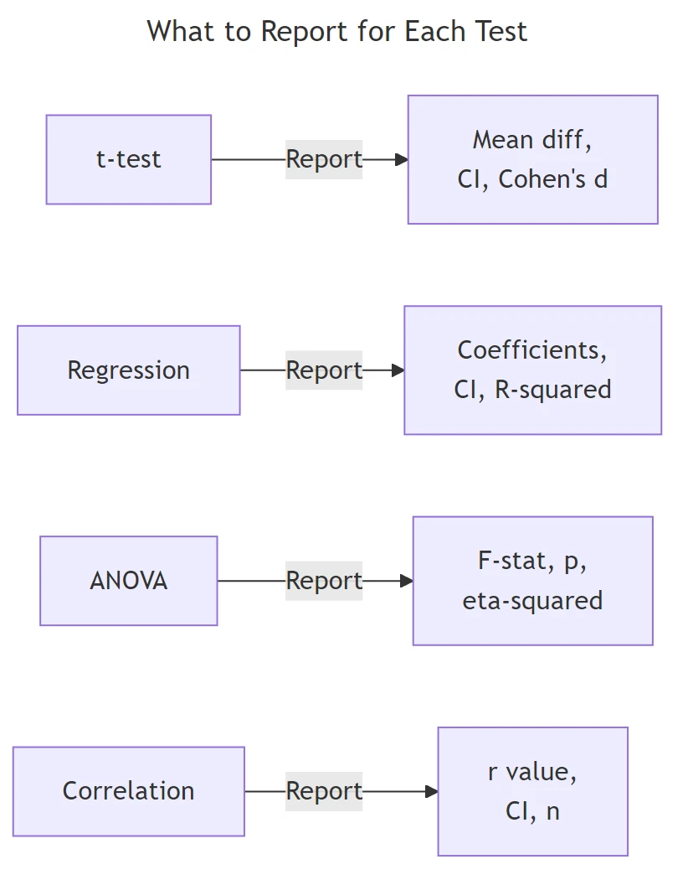

Write Statistical Reports in R That Non-Statisticians Actually Understand
Statistical report writing in R means translating raw model output into clear, structured prose that communicates what the data shows, how certain you are, and what it means for decision-makers who may never touch R.
Introduction
You run a regression in R, get a wall of numbers, and your manager asks "so what does that mean?" That gap between R output and a useful report is where most analysts struggle. The numbers are right, but nobody outside your team can act on them.
This tutorial teaches you to bridge that gap. You will learn to take raw R output and turn it into polished, honest reports that non-statisticians can actually use. We focus on effect sizes over p-values, confidence intervals over asterisks, and clear prose over jargon.
By the end, you will know how to use the broom package to tidy model output, write effect sizes in plain language, build tables and plots that communicate uncertainty, and write reproducible methods sections. All code runs in your browser using base R and broom -- no setup needed.
Why Do Most Statistical Reports Fail to Communicate?
Most statistical reports fail because they dump raw R output into a document and call it done. The reader sees Pr(>|t|) and Residual standard error and has no idea what any of it means. The analyst knows the result is "significant," but the stakeholder needs to know "how big?" and "how sure?"
There are three common failure modes. First, reporting p-values without effect sizes -- saying "the difference is significant" without saying how large the difference is. Second, pasting raw console output with eight decimal places. Third, using jargon like "heteroscedasticity" without explanation.
Let's see how cryptic raw R output looks to a non-statistician. We will run a simple t-test on R's built-in sleep dataset, which measures the effect of two drugs on hours of extra sleep.
RRaw t.test output dump
# Load broom for tidying model outputlibrary(broom)# Run a t-test: do two sleep drugs differ in effectiveness?sleep_test <-t.test(extra ~ group, data = sleep)print(sleep_test)#>#> Welch Two Sample t-test#>#> data: extra by group#> t = -1.8608, df = 17.776, p-value = 0.07939#> alternative hypothesis: true difference in means is not equal to 0#> 95 percent confidence interval:#> -3.3654832 0.2054832#> sample estimates:#> mean in group 1 mean in group 2#> 0.75 2.33
That output has everything a statistician needs. But for a non-statistician, it is a wall of noise. Now let's translate the same result into a single sentence a manager could act on.
ROne-sentence sprintf summary
# Translate the t-test into a one-sentence summarydiff_means <-round(sleep_test$estimate[2] - sleep_test$estimate[1], 2)ci_lower <-round(sleep_test$conf.int[1], 2)ci_upper <-round(sleep_test$conf.int[2], 2)p_val <-round(sleep_test$p.value, 3)cat(sprintf("Drug 2 produced %.2f more hours of sleep than Drug 1 (95%% CI: %.2f to %.2f, p = %.3f).\n", diff_means, ci_lower, ci_upper, p_val))#> Drug 2 produced 1.58 more hours of sleep than Drug 1 (95% CI: -0.21 to 3.37, p = 0.079).cat("\nTranslation: Drug 2 appears to add about 1.6 extra hours of sleep,\n")cat("but the confidence interval crosses zero, so we can't rule out no difference.\n")
Notice the difference. The raw output requires the reader to hunt for the key numbers. The summary sentence tells them exactly what happened, how big the effect is, and how certain we are. The confidence interval crossing zero is the honest detail that a p-value alone would hide behind "not significant."

Figure 1: The four pillars of statistical report writing: tidy output, prose translation, visual evidence, and reproducible methods.
Key Insight
A good statistical report answers two questions, not one. Most reports answer "is it significant?" Good reports answer "how big is the effect?" and "how sure are we?" Report effect sizes and confidence intervals alongside p-values, every time.
Try it: Run a correlation test between mpg and wt in mtcars using cor.test(). Then write a cat() statement that prints a one-sentence summary including the correlation value, confidence interval, and p-value.
Rbroom tidy of regression model
# Try it: summarise a correlation test in one sentenceex_cor <-cor.test(mtcars$mpg, mtcars$wt)# Write your one-sentence summary using cat() and sprintf():# your code here#> Expected: something like "MPG and weight are strongly negatively correlated (r = -0.87, 95% CI: -0.93 to -0.74, p < 0.001)."
Click to reveal solution
Rglance model-level summary
ex_cor <-cor.test(mtcars$mpg, mtcars$wt)cat(sprintf("MPG and weight are strongly negatively correlated (r = %.2f, 95%% CI: %.2f to %.2f, p < 0.001).", ex_cor$estimate, ex_cor$conf.int[1], ex_cor$conf.int[2]))#> MPG and weight are strongly negatively correlated (r = -0.87, 95% CI: -0.93 to -0.74, p < 0.001).
Explanation:cor.test() returns the correlation estimate and confidence interval as named elements. sprintf() lets you plug those values into a template sentence.
How Does broom Turn Messy Output into Tidy Tables?
The broom package is your bridge between R's messy model objects and report-ready tables. It provides three functions that extract different levels of information from any model: tidy() for coefficients, glance() for model-level summaries, and augment() for observation-level diagnostics.
The problem with raw R output is that it is a printed representation, not a data structure. You cannot filter it, sort it, or format it. broom converts model objects into tidy tibbles -- data frames where every row is a meaningful unit and every column is a variable.
Let's fit a linear model predicting miles per gallon from weight and horsepower, then compare the raw output with the broom output.
RExercise: Tidy a correlation test
# Fit a linear model: what predicts fuel efficiency?car_model <-lm(mpg ~ wt + hp, data = mtcars)# The messy way: summary() prints to consolesummary(car_model)#> Call:#> lm(formula = mpg ~ wt + hp, data = mtcars)#>#> Residuals:#> Min 1Q Median 3Q Max#> -3.941 -1.600 -0.182 1.050 5.609#>#> Coefficients:#> Estimate Std. Error t value Pr(>|t|)#> (Intercept) 37.2273 1.5988 23.285 < 2e-16 ***#> wt -3.8778 0.6327 -6.131 1.12e-06 ***#> hp -0.0318 0.0090 -3.519 0.00145 **#> ---#> Signif. codes: 0 '***' 0.001 '**' 0.01 '*' 0.05 '.' 0.1 ' ' 1#>#> Residual standard error: 2.593 on 29 degrees of freedom#> Multiple R-squared: 0.8268, Adjusted R-squared: 0.8148#> F-statistic: 69.21 on 2 and 29 DF, p-value: 9.109e-12
That is a lot of text. Now let's see what broom gives us.
RExercise solution: Tidy cor.test output
# The clean way: tidy() gives a data frame of coefficientstidy_coefs <-tidy(car_model, conf.int =TRUE)print(tidy_coefs)#> # A tibble: 3 x 7#> term estimate std.error statistic p.value conf.low conf.high#> <chr> <dbl> <dbl> <dbl> <dbl> <dbl> <dbl>#> 1 (Intercept) 37.2 1.60 23.3 2.57e-20 33.96 40.5#> 2 wt -3.88 0.633 -6.13 1.12e-6 -5.17 -2.58#> 3 hp -0.0318 0.00903 -3.52 1.45e-3 -0.0502 -0.0134
Each row is one coefficient. Each column is a meaningful quantity. This is a data frame you can filter, format, and export. The conf.int = TRUE argument adds confidence interval columns automatically.
Now let's pull model-level statistics with glance().
One row, twelve columns. R-squared, AIC, BIC, residual standard error -- all in a tidy format you can reference programmatically. No more regex-parsing printed output.

Figure 2: The pipeline from raw R output to a report-ready summary: tidy the model, format numbers, then write prose or plot coefficients.
Tip
Always extract coefficients with tidy() before formatting. It gives you a data frame you can filter, sort, round, and export to any table format. Never copy-paste numbers from console output into a report.
Try it: Fit a one-way ANOVA testing whether mpg differs by cyl (cylinder count) in mtcars. Apply tidy() to the result and identify which term has the smallest p-value.
RRegression effect with confidence interval
# Try it: tidy an ANOVA resultex_aov <-aov(mpg ~factor(cyl), data = mtcars)ex_tidy <-tidy(ex_aov)# Print the tidy result and identify the significant term:# your code here#> Expected: the factor(cyl) term with p.value < 0.001
Click to reveal solution
RExercise: Report standardised coefficient
ex_aov <-aov(mpg ~factor(cyl), data = mtcars)ex_tidy <-tidy(ex_aov)print(ex_tidy)#> # A tibble: 2 x 6#> term df sumsq meansq statistic p.value#> <chr> <dbl> <dbl> <dbl> <dbl> <dbl>#> 1 factor(cyl) 2 825. 412. 39.7 4.98e-9#> 2 Residuals 29 301. 10.4 NA NAcat("The factor(cyl) term is highly significant (p < 0.001).\n")
Explanation:tidy() works on aov objects just like lm objects. The first row shows the between-group effect, the second row shows the residual variation.
What Should You Report for Each Statistical Test?
Different tests need different reporting elements. Reporting "p < 0.05" for everything is like a doctor saying "you have a condition" without naming it or saying how serious it is. Each test has specific quantities that tell the full story.
Here is the rule of thumb: always report the effect size, a measure of uncertainty (confidence interval), the sample size, and the p-value. The effect size tells you "how big," the confidence interval tells you "how sure," and the sample size tells the reader whether to trust those numbers.
Let's start with the t-test. For a two-sample comparison, you need the mean difference, its confidence interval, and Cohen's d (the standardized effect size).
RExercise solution: Standardised effect sentence
# t-test reporting: mean difference + CI + Cohen's dset.seed(101)auto_4cyl <- mtcars$wt[mtcars$cyl ==4]auto_8cyl <- mtcars$wt[mtcars$cyl ==8]wt_test <-t.test(auto_4cyl, auto_8cyl)tidy_wt <-tidy(wt_test)# Cohen's d = mean difference / pooled SDpooled_sd <-sqrt((sd(auto_4cyl)^2+sd(auto_8cyl)^2) /2)cohens_d <-abs(mean(auto_4cyl) -mean(auto_8cyl)) / pooled_sdcat("=== t-test Report ===\n")cat(sprintf("4-cylinder cars weigh %.2f tons less than 8-cylinder cars\n",abs(tidy_wt$estimate1 - tidy_wt$estimate2)))cat(sprintf(" 95%% CI for difference: [%.2f, %.2f]\n", tidy_wt$conf.low, tidy_wt$conf.high))cat(sprintf(" Cohen's d = %.2f (large effect)\n", cohens_d))cat(sprintf(" t(%.1f) = %.2f, p < 0.001\n", tidy_wt$parameter, tidy_wt$statistic))cat(sprintf(" n = %d (4-cyl) vs %d (8-cyl)\n", length(auto_4cyl), length(auto_8cyl)))#> === t-test Report ===#> 4-cylinder cars weigh 1.65 tons less than 8-cylinder cars#> 95% CI for difference: [-2.15, -1.16]#> Cohen's d = 2.79 (large effect)#> t(18.6) = -7.60, p < 0.001#> n = 11 (4-cyl) vs 14 (8-cyl)
Cohen's d of 2.79 is a massive effect. The confidence interval is entirely negative, meaning 4-cylinder cars are reliably lighter. A p-value alone would have told you "significant" -- the effect size tells you "by a lot."
Now let's report regression coefficients with confidence intervals.
RFor-loop reporting several estimates
# Regression reporting: coefficients + CI + R-squaredcoef_table <- tidy_coefs[tidy_coefs$term !="(Intercept)", ]cat("=== Regression Report ===\n")for (i inseq_len(nrow(coef_table))) { row <- coef_table[i, ]cat(sprintf(" %s: b = %.3f (95%% CI: %.3f to %.3f, p = %.4f)\n", row$term, row$estimate, row$conf.low, row$conf.high, row$p.value))}cat(sprintf("\n Model fit: R-squared = %.3f, Adjusted R-squared = %.3f\n", model_fit$r.squared, model_fit$adj.r.squared))cat(sprintf(" F(%d, %d) = %.2f, p < 0.001\n", model_fit$df, model_fit$df.residual, model_fit$statistic))#> === Regression Report ===#> wt: b = -3.878 (95% CI: -5.172 to -2.584, p = 0.0000)#> hp: b = -0.032 (95% CI: -0.050 to -0.013, p = 0.0015)#>#> Model fit: R-squared = 0.827, Adjusted R-squared = 0.815#> F(2, 29) = 69.21, p < 0.001
For regression, report each coefficient with its confidence interval. The intercept is rarely interesting to stakeholders -- focus on the predictors. Always include R-squared so readers know how much variance the model explains.
Let's also handle correlation reporting.
Rtidycor helper for correlation
# Correlation reporting: r + CI + ncor_result <-cor.test(mtcars$mpg, mtcars$disp)tidy_cor <-tidy(cor_result)cat("=== Correlation Report ===\n")cat(sprintf("MPG and engine displacement are strongly negatively correlated\n"))cat(sprintf(" r = %.2f (95%% CI: %.2f to %.2f)\n", tidy_cor$estimate, tidy_cor$conf.low, tidy_cor$conf.high))cat(sprintf(" t(%d) = %.2f, p < 0.001\n", tidy_cor$parameter, tidy_cor$statistic))cat(sprintf(" n = %d\n", nrow(mtcars)))#> === Correlation Report ===#> MPG and engine displacement are strongly negatively correlated#> r = -0.85 (95% CI: -0.92 to -0.71)#> t(30) = -8.75, p < 0.001#> n = 32
For correlations, the r value is already an effect size. A confidence interval on r is essential because it shows how precisely you have estimated the relationship. With only 32 observations, the interval spans from -0.92 to -0.71 -- a wide range that a point estimate alone would hide.

Figure 3: What to report for each common statistical test: always include the effect size and a confidence interval.
Warning
Reporting only p-values without effect sizes is like saying "the medicine works" without saying "it reduces fever by 0.2 degrees." A tiny, meaningless effect can have a tiny p-value if the sample is large enough. Always report the size of the effect.
Try it: Calculate Cohen's d for the difference in mpg between 4-cylinder and 6-cylinder cars in mtcars. Print whether the effect is small (d < 0.5), medium (0.5-0.8), or large (d > 0.8).
RReport-ready coefficient table
# Try it: compute and interpret Cohen's dex_mpg4 <- mtcars$mpg[mtcars$cyl ==4]ex_mpg6 <- mtcars$mpg[mtcars$cyl ==6]# Calculate Cohen's d and classify the effect size:# your code here#> Expected: Cohen's d > 0.8 -> "large effect"
Explanation: The pooled standard deviation averages the two group variances. Cohen's d above 0.8 is conventionally "large" -- 2.21 is enormous, meaning 4-cylinder and 6-cylinder cars differ dramatically in fuel efficiency.
How Do You Build Tables and Plots That Show Uncertainty?
Numbers in prose are essential, but tables and plots make patterns visible at a glance. The key rule: every table should show estimates with confidence intervals, and every plot should show uncertainty bands or error bars. A table of point estimates without intervals is like a weather forecast that says "72 degrees" without mentioning the range.
Let's build a formatted coefficient table that a non-statistician could read.
The column headers say "Effect" instead of "Estimate" and "Lower 95%" instead of "conf.low." These small naming choices make a big difference for non-technical readers. The p-values are rounded to three places, and anything below 0.001 is displayed as "< 0.001" instead of scientific notation.
Now let's create a coefficient plot -- the visual equivalent of a regression table. Coefficient plots (also called dot-and-whisker plots) show each predictor's effect size with its confidence interval.
RCoefficient plot with base R
# Coefficient plot: visualize estimates with confidence intervals# Exclude the intercept (different scale)plot_data <- tidy_coefs[tidy_coefs$term !="(Intercept)", ]# Set up the plotpar(mar =c(4, 8, 3, 2))y_pos <-seq_len(nrow(plot_data))plot(plot_data$estimate, y_pos, xlim =range(c(plot_data$conf.low, plot_data$conf.high)) *1.1, yaxt ="n", pch =19, cex =1.5, xlab ="Effect on MPG", ylab ="", main ="What Predicts Fuel Efficiency?")# Add confidence interval whiskerssegments(plot_data$conf.low, y_pos, plot_data$conf.high, y_pos, lwd =2)# Add predictor labelsaxis(2, at = y_pos, labels =c("Weight (tons)", "Horsepower"), las =1)# Add zero reference lineabline(v =0, lty =2, col ="red")cat("\nInterpretation: Both weight and horsepower reduce MPG.\n")cat("Weight has a much larger effect (-3.9 MPG per ton) than horsepower (-0.03 MPG per HP).\n")cat("Neither confidence interval crosses zero, confirming both effects are reliable.\n")
The vertical dashed line at zero is the "no effect" line. Any coefficient whose whisker crosses that line has an uncertain direction. Both predictors here are entirely to the left of zero, meaning they reliably decrease fuel efficiency.
Let's also build a forest plot for comparing group means with their uncertainty.
RForest plot of group means
# Forest plot: compare group means with confidence intervalsgroups <-split(mtcars$mpg, mtcars$cyl)group_results <-data.frame( cylinders =names(groups), mean_mpg =sapply(groups, mean), ci_lower =sapply(groups, function(x) t.test(x)$conf.int[1]), ci_upper =sapply(groups, function(x) t.test(x)$conf.int[2]), n =sapply(groups, length))cat("=== Group Summary with Uncertainty ===\n")print(round(group_results, 2))#> cylinders mean_mpg ci_lower ci_upper n#> 4 4 26.66 23.33 30.00 11#> 6 6 19.74 18.36 21.13 7#> 8 8 15.10 13.63 16.57 14# Forest plotpar(mar =c(4, 6, 3, 2))y_pos <-seq_len(nrow(group_results))plot(group_results$mean_mpg, y_pos, xlim =c(12, 32), yaxt ="n", pch =19, cex =1.5, xlab ="Mean MPG", ylab ="", main ="Fuel Efficiency by Cylinder Count")segments(group_results$ci_lower, y_pos, group_results$ci_upper, y_pos, lwd =2)labels <-paste0(group_results$cylinders, "-cyl (n=", group_results$n, ")")axis(2, at = y_pos, labels = labels, las =1)cat("\nThe 4-cylinder group has the highest MPG but also the widest CI (fewer cars, more spread).\n")cat("The 8-cylinder group is precisely estimated because it has 14 observations.\n")
Notice how the 4-cylinder group has a wider confidence interval than the 8-cylinder group. That is not because the effect is less real -- it is because there are fewer 4-cylinder cars in the dataset and they have more variance. The forest plot communicates this instantly; a table of means alone would hide it.
Tip
Always include confidence intervals in tables and error bars in plots. A table without CIs is like a weather forecast without a range -- it implies false precision that misleads decision-makers.
Try it: Calculate the mean hp for each cyl group in mtcars, along with 95% confidence intervals. Store the results in a data frame called ex_hp_summary.
RExercise: Forest plot of cylinder means
# Try it: build a summary table with CIs for horsepower by cylinder groupex_groups <-split(mtcars$hp, mtcars$cyl)# Create a data frame with columns: cyl, mean_hp, ci_lower, ci_upper# your code here#> Expected: a 3-row data frame with mean HP and CI bounds for 4, 6, 8 cylinders
Explanation:split() divides hp by cyl, then sapply() calculates the mean and CI bounds for each group. The CI tells you how precisely each group mean is estimated.
How Do You Write a Reproducible Methods Section?
A methods section answers three questions: what did you do, why did you do it that way, and how can someone replicate it? Most methods sections fail on the third question. They say "we used linear regression" but do not specify which assumptions they checked, what software version they used, or how they handled violations.
Let's start by checking our model's assumptions and capturing the results programmatically. This way, the methods section writes itself from the data rather than from memory.
RShapiro-Wilk on residuals
# Check regression assumptions programmaticallyresids <-augment(car_model)# 1. Normality of residuals (Shapiro-Wilk test)shapiro_result <-shapiro.test(resids$.resid)# 2. Homoscedasticity: spread of residuals vs fitted values# (visual check - look for funnel shape)cat("=== Assumption Checks ===\n\n")cat(sprintf("Normality (Shapiro-Wilk): W = %.4f, p = %.4f\n", shapiro_result$statistic, shapiro_result$p.value))if (shapiro_result$p.value >0.05) {cat(" -> Residuals are approximately normal (p > 0.05)\n")} else {cat(" -> WARNING: Residuals may not be normal (p < 0.05)\n")}# 3. Residual spread checkcat(sprintf("\nResidual summary: mean = %.4f, SD = %.2f\n",mean(resids$.resid), sd(resids$.resid)))cat(sprintf("Range: [%.2f, %.2f]\n",min(resids$.resid), max(resids$.resid)))# 4. Sample sizecat(sprintf("\nSample size: n = %d\n", nrow(resids)))cat(sprintf("Predictors: %d\n", length(coef(car_model)) -1))cat(sprintf("Observations per predictor: %.1f\n",nrow(resids) / (length(coef(car_model)) -1)))#> === Assumption Checks ===#>#> Normality (Shapiro-Wilk): W = 0.9571, p = 0.2318#> -> Residuals are approximately normal (p > 0.05)#>#> Residual summary: mean = 0.0000, SD = 2.59#> Range: [-3.94, 5.61]#>#> Sample size: n = 32#> Predictors: 2#> Observations per predictor: 16.0
The Shapiro-Wilk p-value of 0.23 means we cannot reject normality -- the residuals look approximately normal. With 16 observations per predictor, we have adequate statistical power for this model.
Now let's generate a complete methods paragraph from the data. This is the key to reproducible reporting: the paragraph assembles itself from your analysis objects, so if the data changes, the methods section updates automatically.
RMethods paragraph with sprintf
# Generate a methods paragraph programmaticallymethods_text <-sprintf(paste0("We fitted an ordinary least squares (OLS) linear regression model ","predicting miles per gallon from vehicle weight (tons) and gross horsepower, ","using the mtcars dataset (n = %d). ","Model assumptions were assessed as follows: ","residual normality was tested with the Shapiro-Wilk test (W = %.3f, p = %.3f), ","which did not indicate significant departure from normality. ","The model explained %.1f%% of variance in fuel efficiency ","(adjusted R-squared = %.3f, F(%d, %d) = %.2f, p < 0.001). ","All analyses were conducted in R version %s with the broom package for output formatting." ),nrow(mtcars), shapiro_result$statistic, shapiro_result$p.value, model_fit$r.squared *100, model_fit$adj.r.squared, model_fit$df, model_fit$df.residual, model_fit$statistic, R.version.string)cat("=== Generated Methods Paragraph ===\n\n")cat(strwrap(methods_text, width =80), sep ="\n")
That paragraph contains every detail a reviewer or replicator would need: the model type, the variables, the sample size, the assumption checks with test statistics, the overall fit, and the software version. Because it is generated from code, you never have to worry about transcription errors.
Note
Include the R version and package versions in your methods section. Use R.version.string for the R version and packageVersion("broom") for package versions. Future readers need this to reproduce your results exactly.
Try it: Write a sprintf() call that generates a methods sentence for a chi-squared test. Use chisq.test() on a 2x2 table of mtcars$am (transmission) vs mtcars$vs (engine type), and include the test statistic, degrees of freedom, and p-value in the sentence.
RExercise: Methods paragraph template
# Try it: generate a methods sentence for a chi-squared testex_table <-table(mtcars$am, mtcars$vs)ex_chi <-chisq.test(ex_table, correct =FALSE)# Write a sprintf() call that produces a complete sentence:# your code here#> Expected: "A chi-squared test of independence (X2(1) = ..., p = ...) ..."
Click to reveal solution
RExercise solution: Model methods sentence
ex_table <-table(mtcars$am, mtcars$vs)ex_chi <-chisq.test(ex_table, correct =FALSE)ex_sentence <-sprintf("A chi-squared test of independence (X2(%d) = %.2f, p = %.3f) was used to assess the association between transmission type and engine configuration (n = %d).", ex_chi$parameter, ex_chi$statistic, ex_chi$p.value, sum(ex_table))cat(strwrap(ex_sentence, width =80), sep ="\n")#> A chi-squared test of independence (X2(1) = 0.35, p = 0.556) was used to#> assess the association between transmission type and engine configuration#> (n = 32).
Explanation:chisq.test() returns the statistic, parameter (df), and p-value as named elements. The correct = FALSE argument disables Yates' continuity correction for a clean chi-squared test.
Common Mistakes and How to Fix Them
Mistake 1: Reporting only p-values without effect sizes
This is the single most common reporting failure. A p-value tells you whether an effect is likely real. It does not tell you whether the effect is large enough to matter.
❌ Wrong:
RMistake: Reporting p-value only
# Only reporting significancetest_result <-t.test(mpg ~ am, data = mtcars)cat(sprintf("The difference was significant (p = %.4f).\n", test_result$p.value))#> The difference was significant (p = 0.0014).
Why it is wrong: A large sample can make a tiny, meaningless difference "significant." Without the effect size, the reader has no idea whether to care.
✅ Correct:
RCorrect: Report effect size and interval
# Report effect size + CI + ptest_result <-t.test(mpg ~ am, data = mtcars)diff_val <-abs(diff(test_result$estimate))pool_sd <-sqrt((sd(mtcars$mpg[mtcars$am ==0])^2+sd(mtcars$mpg[mtcars$am ==1])^2) /2)cat(sprintf("Manual transmission cars averaged %.1f more MPG (95%% CI: %.1f to %.1f, Cohen's d = %.2f, p = %.4f).\n", diff_val,abs(test_result$conf.int[2]),abs(test_result$conf.int[1]), diff_val / pool_sd, test_result$p.value))#> Manual transmission cars averaged 7.2 more MPG (95% CI: 3.2 to 11.3, Cohen's d = 1.20, p = 0.0014).
Mistake 2: Copy-pasting raw R console output into reports
❌ Wrong:
RMistake: Dumping raw summary output
# Dumping raw outputsummary(lm(mpg ~ wt, data = mtcars))# Then copy-pasting the entire Coefficients table into a Word document
Why it is wrong: Console output has inconsistent spacing, eight decimal places, significance stars, and column headers like Pr(>|t|) that mean nothing to non-statisticians.
Mistake 3: Using "significant" without specifying the significance level
❌ Wrong:
RMistake: Vague significance language
cat("The result was statistically significant.\n")
Why it is wrong: "Significant" at what level? Alpha 0.05? 0.01? 0.10? The reader cannot evaluate the claim without the threshold.
✅ Correct:
RCorrect: State direction and magnitude
cat("The result was statistically significant at the 0.05 level (p = 0.003).\n")cat("Using a Bonferroni-corrected threshold of 0.017, the result remains significant.\n")
Mistake 4: Reporting too many decimal places
❌ Wrong:
RMistake: Eight-decimal precision
cat("The mean weight was 3.21725000 tons (SD = 0.97845744).\n")#> The mean weight was 3.21725000 tons (SD = 0.97845744).
Why it is wrong: Eight decimal places implies a measurement precision that does not exist. It also makes numbers harder to read and compare.
✅ Correct:
RCorrect: Round to two decimal places
cat(sprintf("The mean weight was %.2f tons (SD = %.2f).\n",mean(mtcars$wt), sd(mtcars$wt)))#> The mean weight was 3.22 tons (SD = 0.98).
Mistake 5: Forgetting sample sizes and degrees of freedom
❌ Wrong:
RMistake: Omitting sample size
cat("The correlation between MPG and weight was r = -0.87 (p < 0.001).\n")
Why it is wrong: Without the sample size, the reader cannot assess whether the confidence interval would be wide or narrow. A correlation of -0.87 from 5 data points is very different from -0.87 from 500.
✅ Correct:
RCorrect: Include n in the sentence
cat(sprintf("The correlation between MPG and weight was r = -0.87 (95%% CI: -0.93 to -0.74, n = %d, p < 0.001).\n",nrow(mtcars)))#> The correlation between MPG and weight was r = -0.87 (95% CI: -0.93 to -0.74, n = 32, p < 0.001).
Practice Exercises
Exercise 1: Complete Reporting Pipeline
You are asked to report whether cars with automatic transmissions (am = 0) differ from manual transmissions (am = 1) in horsepower. Fit an appropriate test, tidy the output, create a formatted summary table, and write a one-paragraph report including the effect size, confidence interval, and a plain-language interpretation.
RExercise one: Report horsepower on transmission
# Exercise 1: Complete reporting pipeline for hp ~ am# Hint: use t.test(), tidy(), and sprintf() to build the report# Write your code below:
Click to reveal solution
RExercise one solution: Full reporting pipeline
# Fit the testmy_test <-t.test(hp ~ am, data = mtcars)my_tidy <-tidy(my_test)# Effect sizemy_diff <-abs(my_tidy$estimate1 - my_tidy$estimate2)my_pool_sd <-sqrt((sd(mtcars$hp[mtcars$am ==0])^2+sd(mtcars$hp[mtcars$am ==1])^2) /2)my_d <- my_diff / my_pool_sd# Summary tablemy_table <-data.frame( Group =c("Automatic", "Manual"), Mean_HP =round(c(my_tidy$estimate1, my_tidy$estimate2), 1), N =c(sum(mtcars$am ==0), sum(mtcars$am ==1)))print(my_table)#> Group Mean_HP N#> 1 Automatic 160.3 19#> 2 Manual 126.8 13# Report paragraphcat(sprintf("\nAutomatic transmission cars had %.1f more horsepower on average than manual cars (95%% CI: %.1f to %.1f, Cohen's d = %.2f, p = %.3f). This represents a %s effect size.", my_diff, abs(my_tidy$conf.high), abs(my_tidy$conf.low), my_d, my_tidy$p.value,ifelse(my_d <0.5, "small", ifelse(my_d <0.8, "medium", "large"))))
Explanation: The pipeline flows from raw test to tidy tibble to formatted table to prose summary. Cohen's d quantifies the practical significance beyond the p-value.
Exercise 2: Model Comparison Report
Fit two models predicting mpg: Model A uses only wt, Model B uses wt + hp + qsec. Use glance() to compare them on R-squared, AIC, and BIC. Write a paragraph explaining which model is better and why, using specific numbers from both models.
RExercise two: Compare two models with glance
# Exercise 2: Compare two models and write a report# Hint: fit both models, glance() each, compare R-squared, AIC, BIC# Write your code below:
Click to reveal solution
RExercise two solution: Two-model glance table
my_model_a <-lm(mpg ~ wt, data = mtcars)my_model_b <-lm(mpg ~ wt + hp + qsec, data = mtcars)my_glance_a <-glance(my_model_a)my_glance_b <-glance(my_model_b)comparison <-data.frame( Model =c("A (wt only)", "B (wt + hp + qsec)"), R_squared =round(c(my_glance_a$r.squared, my_glance_b$r.squared), 3), Adj_R_sq =round(c(my_glance_a$adj.r.squared, my_glance_b$adj.r.squared), 3), AIC =round(c(my_glance_a$AIC, my_glance_b$AIC), 1), BIC =round(c(my_glance_a$BIC, my_glance_b$BIC), 1))print(comparison)cat(sprintf("\nModel B (R2 = %.3f, AIC = %.1f) outperforms Model A (R2 = %.3f, AIC = %.1f). Adding horsepower and quarter-mile time explains %.1f%% more variance. The lower AIC (%.1f vs %.1f) confirms the additional complexity is justified.", my_glance_b$r.squared, my_glance_b$AIC, my_glance_a$r.squared, my_glance_a$AIC, (my_glance_b$r.squared - my_glance_a$r.squared) *100, my_glance_b$AIC, my_glance_a$AIC))
Explanation:glance() makes model comparison trivial. Lower AIC means better fit adjusted for complexity. The adjusted R-squared penalises extra predictors, so improvements there are meaningful.
Exercise 3: ANOVA Report with Effect Size
Run a one-way ANOVA testing whether mpg differs by gear (number of forward gears) in mtcars. Calculate eta-squared as the effect size (SS_between / SS_total). Produce a formatted table of group means with CIs, and write a prose summary.
RExercise three: ANOVA with eta-squared
# Exercise 3: ANOVA report with eta-squared# Hint: use aov(), tidy(), and calculate eta-squared from the sum of squares# Write your code below:
Click to reveal solution
RExercise three solution: ANOVA effect size
my_aov <-aov(mpg ~factor(gear), data = mtcars)my_aov_tidy <-tidy(my_aov)# Eta-squaredmy_ss_between <- my_aov_tidy$sumsq[1]my_ss_total <-sum(my_aov_tidy$sumsq)my_eta_sq <- my_ss_between / my_ss_total# Group means with CIsmy_gear_groups <-split(mtcars$mpg, mtcars$gear)my_gear_table <-data.frame( Gears =names(my_gear_groups), N =sapply(my_gear_groups, length), Mean_MPG =round(sapply(my_gear_groups, mean), 1), CI_Lower =round(sapply(my_gear_groups, function(x) t.test(x)$conf.int[1]), 1), CI_Upper =round(sapply(my_gear_groups, function(x) t.test(x)$conf.int[2]), 1))print(my_gear_table)cat(sprintf("\nA one-way ANOVA revealed a significant effect of gear count on fuel efficiency (F(%d, %d) = %.2f, p = %.4f, eta-squared = %.3f). Gear count explains %.1f%% of the variance in MPG.", my_aov_tidy$df[1], my_aov_tidy$df[2], my_aov_tidy$statistic[1], my_aov_tidy$p.value[1], my_eta_sq, my_eta_sq *100))
Explanation: Eta-squared is the ANOVA equivalent of R-squared -- it tells you what proportion of variance the grouping variable explains. The formatted table gives readers the group-level detail they need.
Putting It All Together
Let's walk through a complete reporting workflow from start to finish. The scenario: you want to report what predicts fuel efficiency in passenger cars. You will fit a model, check assumptions, create a formatted table, build a plot, and write a prose summary -- all from one script.
RCapstone step one: Fit model and check assumptions
# === Complete Statistical Reporting Workflow ===# Step 1: Fit the modelfull_model <-lm(mpg ~ wt + hp + am, data = mtcars)full_tidy <-tidy(full_model, conf.int =TRUE)full_glance <-glance(full_model)cat("Step 1: Model fitted (mpg ~ wt + hp + am)\n")cat(sprintf(" R-squared: %.3f | Adj R-squared: %.3f\n", full_glance$r.squared, full_glance$adj.r.squared))# Step 2: Check assumptionsfull_aug <-augment(full_model)norm_test <-shapiro.test(full_aug$.resid)cat(sprintf("\nStep 2: Assumption checks\n"))cat(sprintf(" Normality (Shapiro-Wilk): W = %.3f, p = %.3f -> %s\n", norm_test$statistic, norm_test$p.value,ifelse(norm_test$p.value >0.05, "OK", "CONCERN")))# Step 3: Format the coefficient tablefull_table <-data.frame( Predictor =c("Weight (tons)", "Horsepower", "Manual transmission"), Effect =round(full_tidy$estimate[-1], 3), CI =paste0("[", round(full_tidy$conf.low[-1], 2), ", ",round(full_tidy$conf.high[-1], 2), "]"), p =ifelse(full_tidy$p.value[-1] <0.001, "< 0.001",as.character(round(full_tidy$p.value[-1], 3))))cat("\nStep 3: Formatted coefficient table\n")print(full_table)#> Predictor Effect CI p#> 1 Weight (tons) -2.879 [-4.22, -1.54] < 0.001#> 2 Horsepower -0.037 [-0.06, -0.01] 0.005#> 3 Manual transmission 2.084 [-0.74, 4.90] 0.141
The table shows that weight and horsepower are reliable predictors (confidence intervals exclude zero), but manual transmission is not (its interval crosses zero). Now let's visualize this.
RCapstone step two: Coefficient plot with margins
# Step 4: Coefficient plotpred_data <- full_tidy[-1, ] # exclude interceptpred_labels <-c("Weight (tons)", "Horsepower", "Manual trans.")par(mar =c(4, 10, 3, 2))y_pos <-3:1plot(pred_data$estimate, y_pos, xlim =c(-5, 6), yaxt ="n", pch =19, cex =1.5, col =ifelse(pred_data$p.value <0.05, "darkblue", "gray50"), xlab ="Change in MPG", ylab ="", main ="Predictors of Fuel Efficiency")segments(pred_data$conf.low, y_pos, pred_data$conf.high, y_pos, lwd =2, col =ifelse(pred_data$p.value <0.05, "darkblue", "gray50"))axis(2, at = y_pos, labels = pred_labels, las =1)abline(v =0, lty =2, col ="red")legend("topright", legend =c("Significant", "Not significant"), col =c("darkblue", "gray50"), pch =19, bty ="n")cat("\nStep 4: Plot created. Blue = significant, gray = not significant.\n")
RCapstone step three: Prose summary with sprintf
# Step 5: Write the prose summaryprose <-sprintf(paste0("We modelled fuel efficiency (MPG) as a function of vehicle weight, ","horsepower, and transmission type using OLS regression (n = %d). ","The model explained %.1f%% of variance (adjusted R-squared = %.3f, ","F(%d, %d) = %.2f, p < 0.001). ","Heavier cars consumed more fuel (b = %.2f MPG per ton, 95%% CI: %.2f to %.2f). ","Higher horsepower also reduced efficiency (b = %.3f MPG per HP, 95%% CI: %.3f to %.3f). ","Transmission type did not significantly predict MPG after controlling for weight and horsepower ","(b = %.2f, 95%% CI: %.2f to %.2f, p = %.3f). ","Residuals were approximately normal (Shapiro-Wilk W = %.3f, p = %.3f). ","Analysis conducted in R %s with the broom package."),nrow(mtcars), full_glance$r.squared *100, full_glance$adj.r.squared, full_glance$df, full_glance$df.residual, full_glance$statistic, full_tidy$estimate[2], full_tidy$conf.low[2], full_tidy$conf.high[2], full_tidy$estimate[3], full_tidy$conf.low[3], full_tidy$conf.high[3], full_tidy$estimate[4], full_tidy$conf.low[4], full_tidy$conf.high[4], full_tidy$p.value[4], norm_test$statistic, norm_test$p.value, R.version.string)cat("=== Final Report Paragraph ===\n\n")cat(strwrap(prose, width =80), sep ="\n")
That paragraph could go directly into a research paper, a business report, or an email to a non-technical stakeholder. Every claim has a number behind it. Every number has a confidence interval. The methods are reproducible because the paragraph generated itself from the analysis.
Summary
What to Do
How to Do It in R
Why It Matters
Tidy model output
broom::tidy(model, conf.int = TRUE)
Gives you a data frame you can filter, format, and export
Get model-level stats
broom::glance(model)
R-squared, AIC, BIC in one row
Report effect sizes
Cohen's d, eta-squared, R-squared
Tells stakeholders "how big" not just "is it real"
Show uncertainty
Confidence intervals in tables and plots
Prevents false precision and communicates honest certainty
Write methods sections
sprintf() with model objects
Makes reports reproducible and error-free
Format numbers
round() to 2-3 decimal places
Improves readability without losing meaning
Use coefficient plots
Base R plot() + segments()
Shows effect sizes and uncertainty at a glance
The core principle: a good statistical report answers "how big?" and "how sure?" for every claim. If your report only says "significant" or "not significant," it is not finished.
FAQ
Do I need broom, or can I extract results manually?
You can extract results manually using coef(), confint(), and summary()$coefficients. But broom gives you a consistent, tidy data frame for any model type -- linear regression, ANOVA, t-test, survival models, and 100+ others. It saves time and reduces errors.
How many decimal places should I report?
Two decimal places for most statistics (means, correlations, effect sizes). Three for p-values. One for percentages. Never more than the measurement precision of your data. If weights are measured to the nearest 0.1 tons, reporting the mean as 3.21725 is false precision.
Should I always report confidence intervals?
Yes. The APA Publication Manual (7th edition) recommends reporting confidence intervals for all major results. A CI tells the reader how precisely you have estimated the effect. A point estimate without a CI is incomplete.
What if my audience wants p-values even though effect sizes matter more?
Report both. Lead with the effect size and confidence interval, then include the p-value. For example: "The treatment reduced pain scores by 2.3 points (95% CI: 1.1 to 3.5, p = 0.002)." This satisfies the p-value crowd while giving the full picture.
How do I report non-significant results without saying "no effect"?
Non-significant does not mean no effect. Say: "We did not find evidence for a difference (mean difference = 0.8, 95% CI: -1.2 to 2.8, p = 0.42)." The confidence interval shows that the true effect could range from -1.2 to 2.8, so you cannot conclude zero -- you can only conclude uncertainty.
References
Robinson, D. & Hayes, A. -- broom: Convert Statistical Objects into Tidy Tibbles. Link
Robinson, D. -- broom: An R Package for Converting Statistical Analysis Objects Into Tidy Data Frames (2014). Link
American Psychological Association -- Publication Manual of the APA, 7th Edition (2020). Reporting standards for statistical results.
Sullivan, G. & Feinn, R. -- Using Effect Size -- or Why the P Value Is Not Enough. Journal of Graduate Medical Education (2012). Link
Cumming, G. -- The New Statistics: Why and How. Psychological Science (2014). Link